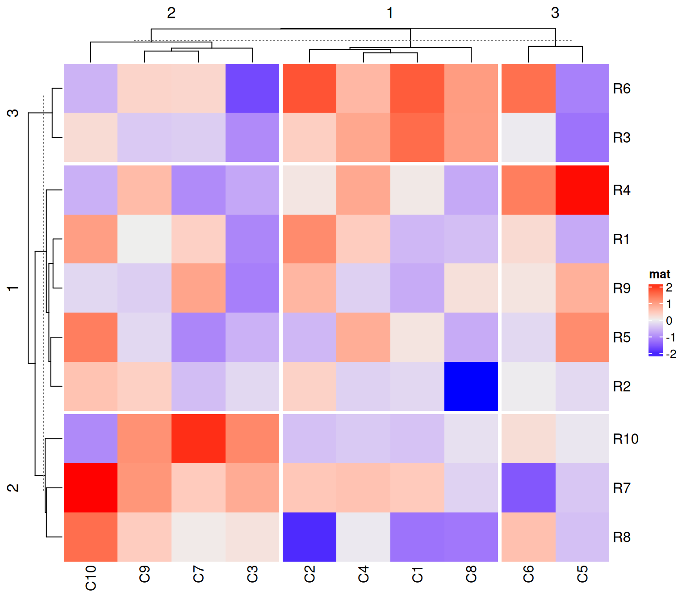

Making a heatmap in R with the ComplexHeatmap package
2025-10-24
Last updated: 2025-10-24
Checks: 7 0
Knit directory: muse/
This reproducible R Markdown analysis was created with workflowr (version 1.7.1). The Checks tab describes the reproducibility checks that were applied when the results were created. The Past versions tab lists the development history.
Great! Since the R Markdown file has been committed to the Git repository, you know the exact version of the code that produced these results.
Great job! The global environment was empty. Objects defined in the global environment can affect the analysis in your R Markdown file in unknown ways. For reproduciblity it’s best to always run the code in an empty environment.
The command set.seed(20200712) was run prior to running
the code in the R Markdown file. Setting a seed ensures that any results
that rely on randomness, e.g. subsampling or permutations, are
reproducible.
Great job! Recording the operating system, R version, and package versions is critical for reproducibility.
Nice! There were no cached chunks for this analysis, so you can be confident that you successfully produced the results during this run.
Great job! Using relative paths to the files within your workflowr project makes it easier to run your code on other machines.
Great! You are using Git for version control. Tracking code development and connecting the code version to the results is critical for reproducibility.
The results in this page were generated with repository version 8915164. See the Past versions tab to see a history of the changes made to the R Markdown and HTML files.
Note that you need to be careful to ensure that all relevant files for
the analysis have been committed to Git prior to generating the results
(you can use wflow_publish or
wflow_git_commit). workflowr only checks the R Markdown
file, but you know if there are other scripts or data files that it
depends on. Below is the status of the Git repository when the results
were generated:
Ignored files:
Ignored: .Rproj.user/
Ignored: data/1M_neurons_filtered_gene_bc_matrices_h5.h5
Ignored: data/293t/
Ignored: data/293t_3t3_filtered_gene_bc_matrices.tar.gz
Ignored: data/293t_filtered_gene_bc_matrices.tar.gz
Ignored: data/5k_Human_Donor1_PBMC_3p_gem-x_5k_Human_Donor1_PBMC_3p_gem-x_count_sample_filtered_feature_bc_matrix.h5
Ignored: data/5k_Human_Donor2_PBMC_3p_gem-x_5k_Human_Donor2_PBMC_3p_gem-x_count_sample_filtered_feature_bc_matrix.h5
Ignored: data/5k_Human_Donor3_PBMC_3p_gem-x_5k_Human_Donor3_PBMC_3p_gem-x_count_sample_filtered_feature_bc_matrix.h5
Ignored: data/5k_Human_Donor4_PBMC_3p_gem-x_5k_Human_Donor4_PBMC_3p_gem-x_count_sample_filtered_feature_bc_matrix.h5
Ignored: data/97516b79-8d08-46a6-b329-5d0a25b0be98.h5ad
Ignored: data/Parent_SC3v3_Human_Glioblastoma_filtered_feature_bc_matrix.tar.gz
Ignored: data/brain_counts/
Ignored: data/cl.obo
Ignored: data/cl.owl
Ignored: data/jurkat/
Ignored: data/jurkat:293t_50:50_filtered_gene_bc_matrices.tar.gz
Ignored: data/jurkat_293t/
Ignored: data/jurkat_filtered_gene_bc_matrices.tar.gz
Ignored: data/pbmc20k/
Ignored: data/pbmc20k_seurat/
Ignored: data/pbmc3k.h5ad
Ignored: data/pbmc3k/
Ignored: data/pbmc3k_bpcells_mat/
Ignored: data/pbmc3k_export.mtx
Ignored: data/pbmc3k_matrix.mtx
Ignored: data/pbmc3k_seurat.rds
Ignored: data/pbmc4k_filtered_gene_bc_matrices.tar.gz
Ignored: data/pbmc_1k_v3_filtered_feature_bc_matrix.h5
Ignored: data/pbmc_1k_v3_raw_feature_bc_matrix.h5
Ignored: data/refdata-gex-GRCh38-2020-A.tar.gz
Ignored: data/seurat_1m_neuron.rds
Ignored: data/t_3k_filtered_gene_bc_matrices.tar.gz
Ignored: r_packages_4.4.1/
Ignored: r_packages_4.5.0/
Untracked files:
Untracked: analysis/bioc_scrnaseq.Rmd
Untracked: bpcells_matrix/
Untracked: data/Caenorhabditis_elegans.WBcel235.113.gtf.gz
Untracked: data/GCF_043380555.1-RS_2024_12_gene_ontology.gaf.gz
Untracked: data/arab.rds
Untracked: data/astronomicalunit.csv
Untracked: data/femaleMiceWeights.csv
Untracked: m3/
Unstaged changes:
Modified: analysis/isoform_switch_analyzer.Rmd
Note that any generated files, e.g. HTML, png, CSS, etc., are not included in this status report because it is ok for generated content to have uncommitted changes.
These are the previous versions of the repository in which changes were
made to the R Markdown (analysis/complex_heatmap.Rmd) and
HTML (docs/complex_heatmap.html) files. If you’ve
configured a remote Git repository (see ?wflow_git_remote),
click on the hyperlinks in the table below to view the files as they
were in that past version.
| File | Version | Author | Date | Message |
|---|---|---|---|---|
| Rmd | 8915164 | Dave Tang | 2025-10-24 | You can make UpSet plots with ComplexHeatmap |
| html | 7b31570 | Dave Tang | 2023-11-01 | Build site. |
| Rmd | 3e13eb5 | Dave Tang | 2023-11-01 | ComplexHeatmap |
Installation
Install stable version from Bioconductor.
BiocManager::install("ComplexHeatmap")Load library.
library(ComplexHeatmap)Data
Download example data.
example_file <- "https://davetang.org/file/TagSeqExample.tab"
data <- read.delim(example_file, header = TRUE, row.names = "gene")
data_subset <- as.matrix(data[rowSums(data)>50000,])
dim(data_subset)[1] 49 6Default heatmap for ComplexHeatmap.
Heatmap(data_subset)
| Version | Author | Date |
|---|---|---|
| 7b31570 | Dave Tang | 2023-11-01 |
Normalise using z-score.
cal_z_score <- function(x){
(x - mean(x)) / sd(x)
}
data_subset_norm <- t(apply(data_subset, 1, cal_z_score))
Heatmap(data_subset_norm)
| Version | Author | Date |
|---|---|---|
| 7b31570 | Dave Tang | 2023-11-01 |
Add a title using column_title; the name
parameter puts a title of the heatmap legend.
Heatmap(data_subset_norm, column_title = "My title", name = "Legend")
| Version | Author | Date |
|---|---|---|
| 7b31570 | Dave Tang | 2023-11-01 |
Two heatmaps.
one <- Heatmap(data_subset, column_title = "Raw", name = "Raw")
two <- Heatmap(data_subset_norm, column_title = "Scaled", name = "Scaled")
one + two
| Version | Author | Date |
|---|---|---|
| 7b31570 | Dave Tang | 2023-11-01 |
Add annotations.
set.seed(123)
mat <- matrix(rnorm(100), 10)
rownames(mat) = paste0("R", 1:10)
colnames(mat) = paste0("C", 1:10)
column_ha = HeatmapAnnotation(
foo1 = rep(c('N', 'T'), 5),
bar1 = anno_barplot(colMeans(mat))
)
row_ha = rowAnnotation(
foo2 = runif(10),
bar2 = anno_barplot(rowMeans(mat))
)
Heatmap(mat, name = "mat", top_annotation = column_ha, right_annotation = row_ha)
| Version | Author | Date |
|---|---|---|
| 7b31570 | Dave Tang | 2023-11-01 |
Heatmap(mat, name = "mat", row_km = 3, column_km = 3)
| Version | Author | Date |
|---|---|---|
| 7b31570 | Dave Tang | 2023-11-01 |
UpSet plot
ComplexHeatmap has an implementation of UpSet plots.
Three lists.
set.seed(123)
lt <- list(a = sample(letters, 10),
b = sample(letters, 15),
c = sample(letters, 20))
m <- make_comb_mat(lt)
UpSet(m)union mode: 1 means in that set and 0 is not taken into account. When there are multiple 1, the relationship is OR. Then, 1 1 0 means a set of elements in set A or B, and they can also in C or not in C (union(A, B)). Under this mode, the seven combination sets can overlap.
m = make_comb_mat(lt, mode = "union")
UpSet(m)With colours.
UpSet(m, comb_col = c(rep(2, 3), rep(3, 3), 1))
Compare two UpSet plots.
set.seed(123)
lt1 = list(a = sample(letters, 10),
b = sample(letters, 15),
c = sample(letters, 20))
m1 = make_comb_mat(lt1)
set.seed(456)
lt2 = list(a = sample(letters, 10),
b = sample(letters, 15),
c = sample(letters, 20))
m2 = make_comb_mat(lt2)
max1 = max(c(set_size(m1), set_size(m2)))
max2 = max(c(comb_size(m1), comb_size(m2)))
UpSet(m1, top_annotation = upset_top_annotation(m1, ylim = c(0, max2)),
right_annotation = upset_right_annotation(m1, ylim = c(0, max1)),
column_title = "UpSet1") +
UpSet(m2, top_annotation = upset_top_annotation(m2, ylim = c(0, max2)),
right_annotation = upset_right_annotation(m2, ylim = c(0, max1)),
column_title = "UpSet2")
sessionInfo()R version 4.5.0 (2025-04-11)
Platform: x86_64-pc-linux-gnu
Running under: Ubuntu 24.04.3 LTS
Matrix products: default
BLAS: /usr/lib/x86_64-linux-gnu/openblas-pthread/libblas.so.3
LAPACK: /usr/lib/x86_64-linux-gnu/openblas-pthread/libopenblasp-r0.3.26.so; LAPACK version 3.12.0
locale:
[1] LC_CTYPE=en_US.UTF-8 LC_NUMERIC=C
[3] LC_TIME=en_US.UTF-8 LC_COLLATE=en_US.UTF-8
[5] LC_MONETARY=en_US.UTF-8 LC_MESSAGES=en_US.UTF-8
[7] LC_PAPER=en_US.UTF-8 LC_NAME=C
[9] LC_ADDRESS=C LC_TELEPHONE=C
[11] LC_MEASUREMENT=en_US.UTF-8 LC_IDENTIFICATION=C
time zone: Etc/UTC
tzcode source: system (glibc)
attached base packages:
[1] grid stats graphics grDevices utils datasets methods
[8] base
other attached packages:
[1] ComplexHeatmap_2.24.1 gridExtra_2.3 dendextend_1.19.0
[4] pheatmap_1.0.13 workflowr_1.7.1
loaded via a namespace (and not attached):
[1] gtable_0.3.6 circlize_0.4.16 shape_1.4.6.1
[4] rjson_0.2.23 xfun_0.52 bslib_0.9.0
[7] ggplot2_3.5.2 GlobalOptions_0.1.2 processx_3.8.6
[10] callr_3.7.6 vctrs_0.6.5 tools_4.5.0
[13] ps_1.9.1 generics_0.1.4 stats4_4.5.0
[16] parallel_4.5.0 tibble_3.3.0 cluster_2.1.8.1
[19] pkgconfig_2.0.3 RColorBrewer_1.1-3 S4Vectors_0.46.0
[22] lifecycle_1.0.4 compiler_4.5.0 farver_2.1.2
[25] stringr_1.5.1 git2r_0.36.2 getPass_0.2-4
[28] codetools_0.2-20 clue_0.3-66 httpuv_1.6.16
[31] htmltools_0.5.8.1 sass_0.4.10 yaml_2.3.10
[34] later_1.4.2 pillar_1.10.2 crayon_1.5.3
[37] jquerylib_0.1.4 whisker_0.4.1 cachem_1.1.0
[40] iterators_1.0.14 viridis_0.6.5 foreach_1.5.2
[43] tidyselect_1.2.1 digest_0.6.37 stringi_1.8.7
[46] dplyr_1.1.4 rprojroot_2.0.4 fastmap_1.2.0
[49] colorspace_2.1-1 cli_3.6.5 magrittr_2.0.3
[52] scales_1.4.0 promises_1.3.3 rmarkdown_2.29
[55] httr_1.4.7 matrixStats_1.5.0 png_0.1-8
[58] GetoptLong_1.0.5 evaluate_1.0.3 knitr_1.50
[61] IRanges_2.42.0 doParallel_1.0.17 viridisLite_0.4.2
[64] rlang_1.1.6 Rcpp_1.0.14 glue_1.8.0
[67] BiocGenerics_0.54.0 rstudioapi_0.17.1 jsonlite_2.0.0
[70] R6_2.6.1 fs_1.6.6